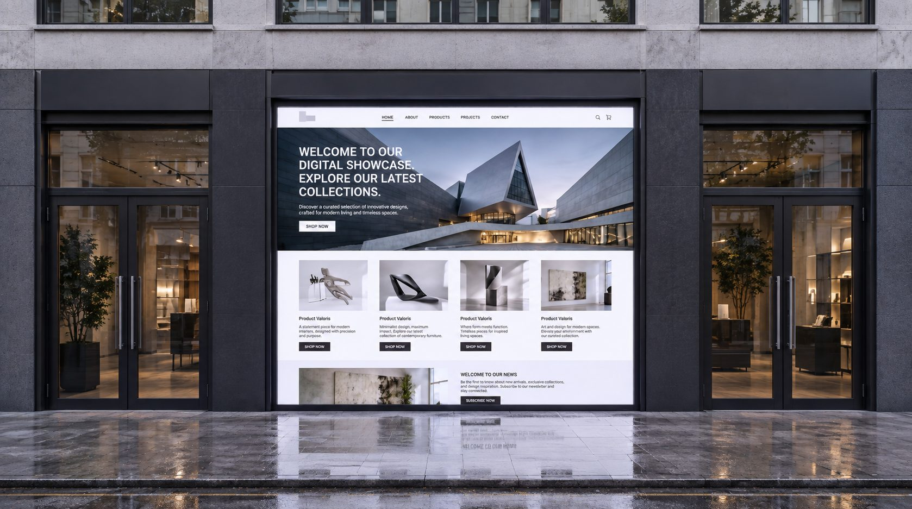

The window is the first page
A shop window has three seconds to explain a brand to someone walking past. A homepage has about the same.

Stand on any high street and watch how people read windows. Nobody studies them. They glance, and in that glance they decide whether the shop is for them. The best windows are edited down to one idea, lit properly and placed at eye level. Everything else is held back for when you step inside.
Most homepages do the opposite. They try to say everything at once: a carousel, three value propositions, a newsletter pop-up and a chat bubble, all competing for the same three seconds.
Edit like a window dresser
We start every storefront by writing the window first. One line that says who the brand is, one image that shows it, one action that invites you in. If that works on its own, the rest of the page has something to build on. If it doesn't, no amount of content further down will rescue it.
The test is simple: cover everything below the first screen and ask a stranger what the brand sells and why it's different. If they can answer, the window is working.